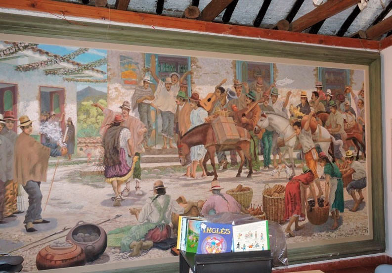

Ferias y fiestas
Para el puente festivo del dia de todos los santos cada año se celebran las ferias y fiestas de Tibirita. Evento que en la noche se llena de vendedores ambulantes de la típica comida de ferias: pinchos de carne, mazorcas, arepas, mamona, tamales y mas. También hay juegos de feria. El atractivo principal es la música y en las 3 noches agrupaciones invitadas tocan en la tarima del parque deleitan a los habitantes y turistas quienes bailan en la cancha de microfútbol o en las graderías. En las mañanas las actividades son más variadas y se centran en lo cultural. Las Presentaciones de bailes, desfiles y cabalgatas son las que entretienen cuando aún no se oculta el sol.
Año nuevo
Para la celebración de año nuevo se realizan fiestas en las noches con orquestas y artistas invitados . se realizan torneos deportivos con su respectiva premiación.
Volver al inicio